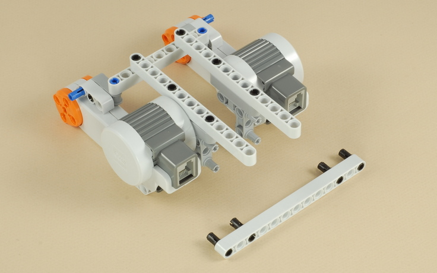
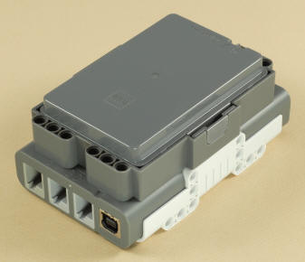
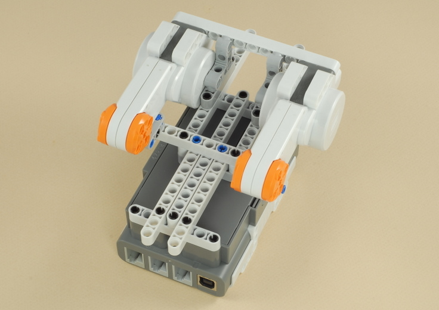
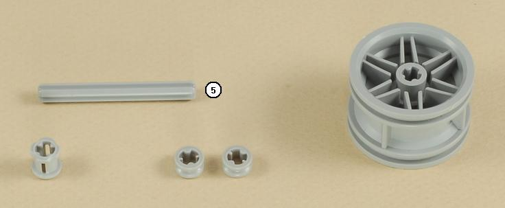

Fun Projects for your LEGO® MINDSTORMS® NXT!
|
|
Fun Projects for your LEGO® MINDSTORMS® NXT! |
| Castor Bot |
|

1
2


3
| Important: Use step 3-AA if using AA
batteries, use step 3-Li if using the NXT Lithium rechargeable
battery. |
| 3-AA | ||
|  | 3-Li |


3-Li (for Lithium Rechargeable Battery Pack only)
5
6
7
8
9



 |
 |
10


11
| Use two medium length wires to connect the two drive
motors to ports B and C on the NXT.
Important: Keep the left wire on the left and the right wire on the right (do not cross the wires). |

| Castor
Bot Programming The Castor Bot is a basic two-motor drive robot with sturdy construction that turns easily. You can use it as a starting point for your own projects, and program it however you want. To get you started, here are a couple of programs that demonstrate the use of the Move block to do different kinds of turns. The TurnDemo program (Easy) shows three kinds of turns using the Move block:
The Spiral program (Intermediate) demonstrates using the Steering parameter on the Move block's data hub to numerically control the amount of turning. It makes the robot drive in a spiral of steadily decreasing radius. |
Challenges
|
|
|